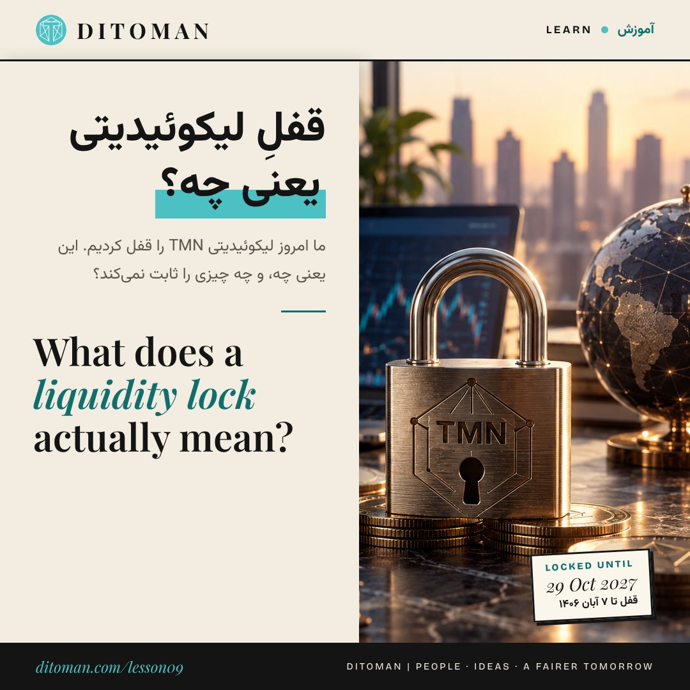

What Does a Liquidity Lock Actually Mean?
قفل لیکوئیدیتی واقعاً یعنی چه؟
Today we locked TMN's liquidity. This lesson uses our own lock as the example: what a liquidity pool is, what LP tokens are, what a lock protects against, what it does not prove, and how to check any lock yourself.
امروز لیکوئیدیتی TMN را قفل کردیم. این درس قفل خود ما را نمونه قرار میدهد: استخر لیکوئیدیتی چیست، توکن LP چیست، قفل از چه چیزی محافظت میکند، چه چیزی را ثابت نمیکند، و هر قفلی را خودتان چطور بررسی کنید.
Lesson Content
محتوای درس
Read the lesson in English or Persian. This structure is designed for future quiz, score, reputation, and reward systems.
درس را به فارسی یا انگلیسی بخوانید. این ساختار برای آزمونک، امتیاز، اعتبار و پاداشهایی طراحی شده که در آینده اضافه میشوند.
In lesson 05 we listed five checks to run on any token before you touch it. Check five was: is there real liquidity, and is it locked? Today we did that for our own token. This lesson explains what we did and what it means.
01. What liquidity is
For a token to be bought and sold on a decentralised exchange such as PancakeSwap, someone has to put two things side by side in a pool: the token itself and something people already value, such as BNB. Buyers put BNB in and take tokens out; sellers do the opposite.
That pool is the token's liquidity. Without it, there is nowhere to trade.
02. LP tokens are a receipt
Whoever adds money to the pool receives LP tokens (liquidity provider tokens). Think of them as a receipt. Whoever holds the receipt can hand it back to the pool at any time and take their share of the BNB and tokens out.
03. The risk: a rug pull
If a project's team holds the receipt, they can empty the pool overnight. Holders are left with tokens that can no longer be sold. This is called a rug pull, and it is one of the most common ways people lose money on small tokens.
04. What a lock does
A lock puts the LP tokens into a separate smart contract with an unlock date. Until that date, nobody can take them back, including the person who locked them. Lockers such as PinkLock, UNCX and Team Finance publish every lock as a public record, so anyone can check it.
05. What we did with TMN
On 29 October 2026 we locked all of the TMN/BNB LP tokens in the project's main wallet in PinkLock on BNB Smart Chain: 0.2277 LP first, then, after adding about $140 of new BNB liquidity the same day, a total of 0.3461 LP from the PancakeSwap V2 pool. The unlock date is 29 October 2027. The record is public: PinkLock record #2089923.
This follows the earlier steps: contract ownership renounced, so no new TMN can ever be minted, and 10% of the original supply removed.
06. What a lock does not prove
A lock removes one specific risk: that the locked liquidity is pulled before the unlock date. It does not prove that a token is valuable, that the project will succeed, or that the price will rise.
It also does not answer the other checks. TMN's supply is still concentrated in founder wallets, which you can see on BscScan. We say that openly, and you should check it for any token, including ours.
07. How to check any lock yourself
Open the lock record and confirm four things: the pair address matches the token's real pool, the amount locked, the unlock date, and how much of the whole pool that amount represents. A lock that ends next week, or covers a tiny part of the pool, means very little.
What to take from this
Trust is not a promise. It is something you can check. Don't trust. Verify.
در درس پنجم، پنج بررسی را گفتیم که قبل از دست زدن به هر توکنی باید انجام داد. بررسی پنجم این بود: آیا لیکوئیدیتی واقعی دارد و آیا قفل شده؟ امروز همین کار را برای توکن خودمان انجام دادیم. این درس توضیح میدهد چه کردیم و یعنی چه.
۰۱. لیکوئیدیتی چیست
برای اینکه یک توکن در صرافی غیرمتمرکزی مثل PancakeSwap خرید و فروش شود، کسی باید دو چیز را کنار هم در یک استخر بگذارد: خود توکن، و چیزی که مردم برایش ارزش قائلاند مثل BNB. خریدار BNB میگذارد و توکن برمیدارد؛ فروشنده برعکس.
این استخر، لیکوئیدیتی توکن است. بدون آن، جایی برای معامله وجود ندارد.
۰۲. توکن LP یک رسید است
هر کسی که به استخر پول اضافه کند، «توکن LP» میگیرد. آن را مثل یک رسید در نظر بگیرید. صاحب رسید هر وقت بخواهد میتواند آن را به استخر پس بدهد و سهمش از BNB و توکن را بیرون بکشد.
۰۳. خطر: راگپول
اگر رسید دست تیم پروژه باشد، میتوانند یکشبه استخر را خالی کنند. دارندگان توکن با توکنهایی میمانند که دیگر قابل فروش نیست. به این «راگپول» میگویند و یکی از رایجترین راههای ضرر کردن روی توکنهای کوچک است.
۰۴. قفل چه میکند
قفل، توکنهای LP را در یک قرارداد هوشمند جداگانه با تاریخ آزاد شدن مشخص میگذارد. تا آن تاریخ هیچکس، حتی کسی که قفل کرده، نمیتواند آنها را پس بگیرد. قفلکنندههایی مثل PinkLock، UNCX و Team Finance هر قفل را بهصورت رکورد عمومی منتشر میکنند تا هر کسی بتواند بررسیاش کند.
۰۵. ما با TMN چه کردیم
در ۷ آبان ۱۴۰۵ (۲۹ اکتبر ۲۰۲۶) همهی توکنهای LP استخر TMN/BNB را که در کیفپول اصلی پروژه بود در PinkLock روی شبکهی BNB قفل کردیم: اول ۰.۲۲۷۷ LP، و همان روز پس از افزودن حدود ۱۴۰ دلار BNB تازه به استخر، در مجموع ۰.۳۴۶۱ LP از استخر PancakeSwap V2. تاریخ آزاد شدن ۷ آبان ۱۴۰۶ (۲۹ اکتبر ۲۰۲۷) است. رکورد عمومی است: رکورد PinkLock شمارهی ۲۰۸۹۹۲۳.
این قدم بعد از قدمهای قبلی است: مالکیت قرارداد رنانس شده، پس هیچ TMN تازهای هرگز ساخته نمیشود، و ۱۰٪ عرضهی اولیه حذف شده است.
۰۶. قفل چه چیزی را ثابت نمیکند
قفل یک خطر مشخص را حذف میکند: اینکه لیکوئیدیتی قفلشده قبل از تاریخ آزاد شدن بیرون کشیده شود. ثابت نمیکند که توکن ارزش دارد، پروژه موفق میشود یا قیمت بالا میرود.
بررسیهای دیگر را هم جواب نمیدهد. عرضهی TMN هنوز در کیفپولهای بنیانگذاران متمرکز است و این را در BscScan میتوانید ببینید. ما این را صریح میگوییم، و شما باید برای هر توکنی، از جمله توکن ما، بررسیاش کنید.
۰۷. چطور هر قفلی را خودتان بررسی کنید
رکورد قفل را باز کنید و چهار چیز را چک کنید: آدرس استخر با استخر واقعی توکن یکی باشد، مقدار قفلشده، تاریخ آزاد شدن، و اینکه این مقدار چه سهمی از کل استخر است. قفلی که هفتهی بعد باز میشود یا فقط بخش کوچکی از استخر را پوشش میدهد، معنای زیادی ندارد.
چه برداشتی کنیم
اعتماد یک قول نیست؛ چیزی است که میشود بررسیاش کرد. اعتماد نکن؛ بررسی کن.
Applying Check Five to TMN
بررسی پنجم روی TMN
Lesson 05 showed that TMN failed two of the five checks: concentrated supply and no locked liquidity. With today's lock, the liquidity held in the project's main wallet is locked until October 2027. Supply concentration is still open, and we will report on it as it changes.
درس پنجم نشان داد که TMN در دو بررسی از پنج بررسی رد میشد: عرضهی متمرکز و لیکوئیدیتی قفلنشده. با قفل امروز، لیکوئیدیتی کیفپول اصلی پروژه تا اکتبر ۲۰۲۷ قفل است. تمرکز عرضه هنوز مسئلهای باز است و هر تغییری در آن را گزارش میکنیم.
Key Concepts
مفاهیم کلیدی
- Liquidity pool
- LP tokens as a receipt
- Rug pull
- Liquidity lock and unlock date
- Public lock records
- What a lock does not prove
- استخر لیکوئیدیتی
- توکن LP بهعنوان رسید
- راگپول
- قفل لیکوئیدیتی و تاریخ آزاد شدن
- رکوردهای عمومی قفل
- آنچه یک قفل ثابت نمیکند
Learning Objectives
اهداف یادگیری
- Explain what a liquidity pool is and why a token needs one.
- Describe what LP tokens represent.
- Explain how a rug pull happens.
- Read a lock record and check its pair, amount, date and share of the pool.
- Name what a lock does not tell you about a token.
- توضیح دهید استخر لیکوئیدیتی چیست و چرا هر توکن به آن نیاز دارد.
- شرح دهید توکنهای LP نشاندهندهی چه چیزی هستند.
- توضیح دهید راگپول چطور اتفاق میافتد.
- رکورد یک قفل را بخوانید و جفتارز، مقدار، تاریخ و سهم آن از استخر را بررسی کنید.
- بگویید یک قفل چه چیزهایی را دربارهی توکن به شما نمیگوید.
Future Quiz Bank
بانک پرسشهای آزمونک آینده
These questions are prepared for the future Ditoman quiz and participation system. They may later support learning scores, reputation layers, and possible TMN reward eligibility.
این پرسشها برای سامانهی آزمونک و مشارکت آیندهی دیتومان آماده شدهاند. ممکن است بعدها مبنای امتیاز یادگیری، لایههای اعتبار و احتمالاً شرایط دریافت پاداش TMN شوند.
Question 1
پرسش ۱
What do LP tokens represent?
توکنهای LP نشاندهندهی چه چیزی هستند؟
A. A share of the token's company
الف. سهمی از شرکت سازندهی توکن
B. A receipt for money added to a liquidity pool
ب. رسیدی برای پولی که به استخر لیکوئیدیتی اضافه شده
C. A trading fee discount
ج. تخفیف کارمزد معامله
D. A governance vote
د. حق رأی در ادارهی پروژه
Correct answer: B
پاسخ درست: ب
Question 2
پرسش ۲
What is a rug pull?
راگپول چیست؟
Correct answer: When whoever holds the LP tokens removes the liquidity, leaving holders unable to sell.
پاسخ درست: وقتی کسی که توکنهای LP دستش است لیکوئیدیتی را بیرون میکشد و دارندگان توکن دیگر نمیتوانند بفروشند.
Question 3
پرسش ۳
True or False: a liquidity lock proves that a token's price will rise.
درست یا نادرست: قفل لیکوئیدیتی ثابت میکند که قیمت توکن بالا میرود.
Correct answer: False. It only prevents the locked liquidity from being removed before the unlock date.
پاسخ درست: نادرست. قفل فقط جلوی بیرون کشیدن لیکوئیدیتی قفلشده را تا تاریخ آزاد شدن میگیرد.
Question 4
پرسش ۴
Which of these should you check on a lock record?
در رکورد یک قفل، کدامیک را باید بررسی کنید؟
A. The pair address
الف. آدرس جفتارز
B. The amount locked and its share of the pool
ب. مقدار قفلشده و سهم آن از استخر
C. The unlock date
ج. تاریخ آزاد شدن
D. All of the above
د. همهی موارد
Correct answer: D
پاسخ درست: د
Question 5
پرسش ۵
When does TMN's locked liquidity unlock?
لیکوئیدیتی قفلشدهی TMN چه زمانی آزاد میشود؟
A. 29 October 2026
الف. ۲۹ اکتبر ۲۰۲۶
B. 29 October 2027
ب. ۲۹ اکتبر ۲۰۲۷
C. Never
ج. هرگز
D. Whenever the founders choose
د. هر وقت بنیانگذاران بخواهند
Correct answer: B
پاسخ درست: ب
Instagram Summary
خلاصه در اینستاگرام
This lesson was first introduced on Ditoman Instagram. The Instagram version gives a short visual summary, while this page provides the full learning version.
خلاصهی تصویری این درس ابتدا در اینستاگرام دیتومان منتشر شد. نسخهی اینستاگرام یک معرفی کوتاه و تصویری است و این صفحه نسخهی کامل آموزشی آن است.